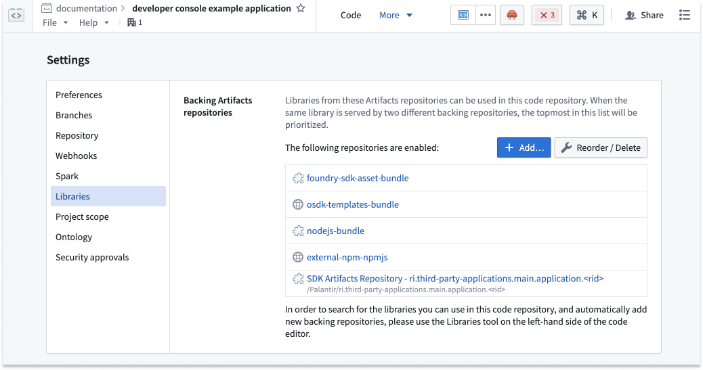
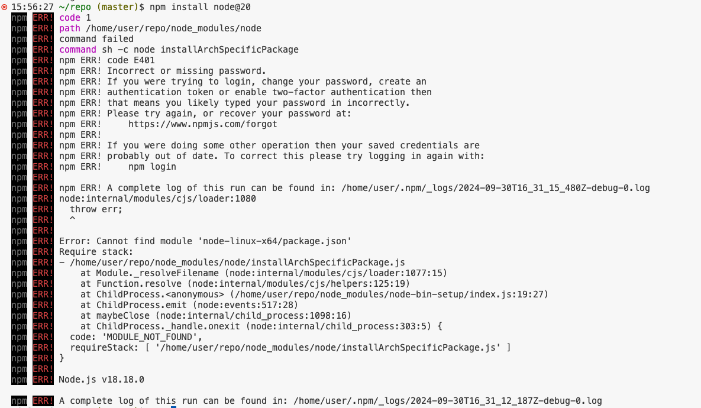

This page contains tips for troubleshooting errors that you may encounter while developing your OSDK React application. If you have other issues or are unable to resolve your issue with this guide, report an issue to Palantir Support.
If working from within the Palantir platform, you will be using a VS Code workspaces running on Palantir's Code Workspaces infrastructure. Further troubleshooting information can be found in the following documentation:
If you are having issues running your npm commands, try the following troubleshooting steps:
package-lock.json) and the dependency folder (node_modules/), then re-run the failing command.NPM MODULE_NOT_FOUND error: Adding new dependenciesCode Repositories requires your dependencies to be explicitly declared.
By default, we add the following npm repositories:
foundry-sdk-asset-bundle, osdk-templates-bundleexternal-npm-npmjsSDK Artifacts Repository - <rid>
The npm install <package> command may fail if you try to add a package that is not present in any of the backing repositories. For example, if the package you try to install is private, you must ensure it is present as a repository Artifact. Review our Artifacts documentation for more information.
Example error:

:::callout{theme="neutral"}
The error code E401 Incorrect or missing password will be emitted by npm when npmjs.com is unreachable from within a VS Code workspace.
:::